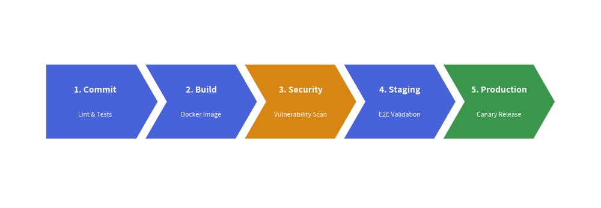

ChevronProcess Component
The ChevronProcess component draws horizontal, sequential process pipelines consisting of interlocking arrowhead blocks (chevrons).
It is the premier component for CI/CD delivery pipelines, phased development milestones, fulfillment lifecycles, and multi-step workflows.
1. Quick Example: CI/CD Pipeline

2. Geometry & Coordinate Anchor
- Bottom-Left Anchor
(x, y): The coordinate passed todraw(xy=...)represents the bottom-left corner of the entire process bounding box. flat_left_end: When set toTrue, the first chevron has a clean vertical left border instead of an indented notch, creating a polished start.corner_angle: Sets the sharpness of the chevron arrowhead tip (typically between45.0and60.0degrees).spacing: The horizontal gap between adjacent chevrons.
3. Class API Reference
Constructor
ChevronProcess(
corner_angle: float = 60.0,
spacing: float = 1.5,
flat_left_end: bool = False,
default_style: str | Style | None = None,
default_textstyle: str | Style | None = None,
default_description_style: str | Style | None = None,
palette: Sequence[tuple[int, int, int]] | None = None,
)
Adding Steps
append(text, description="", style=None, textstyle=None, description_style=None):
Adds a new process stage. Ifstyleis omitted, Drawlib assigns colors automatically frompalette.extend(texts, descriptions=None):
Appends multiple stage titles at once.insert(index, text, description="", ...):
Inserts a stage at a specified index.
Drawing
draw(xy, width=90.0, height=12.0, item_width=None):
Renders the pipeline onto the active canvas. Ifitem_widthis omitted, Drawlib divideswidthequally among all stages.